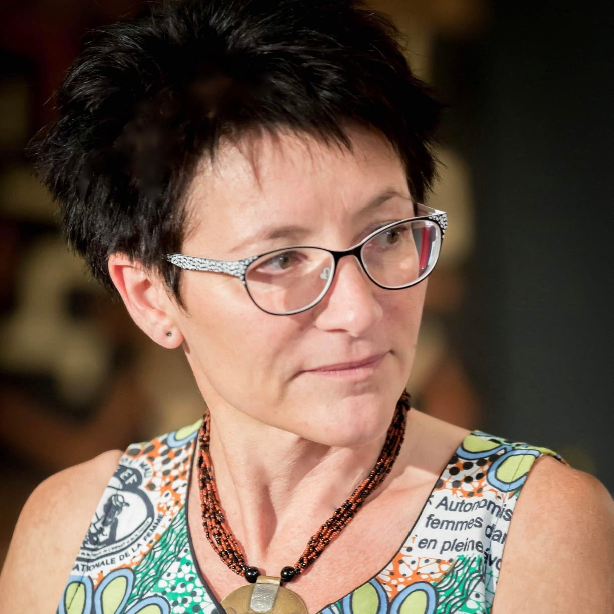
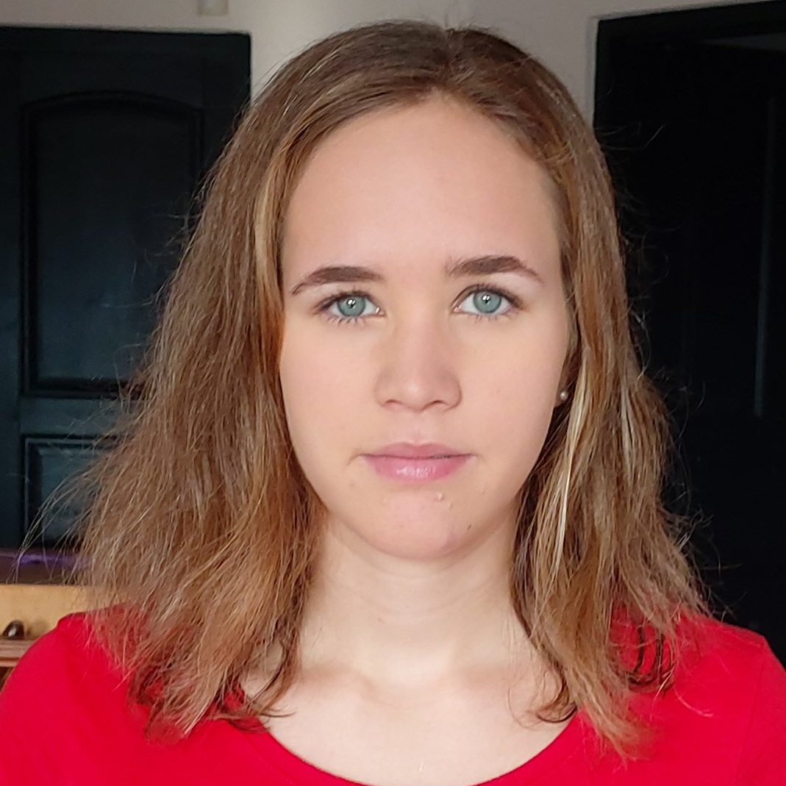
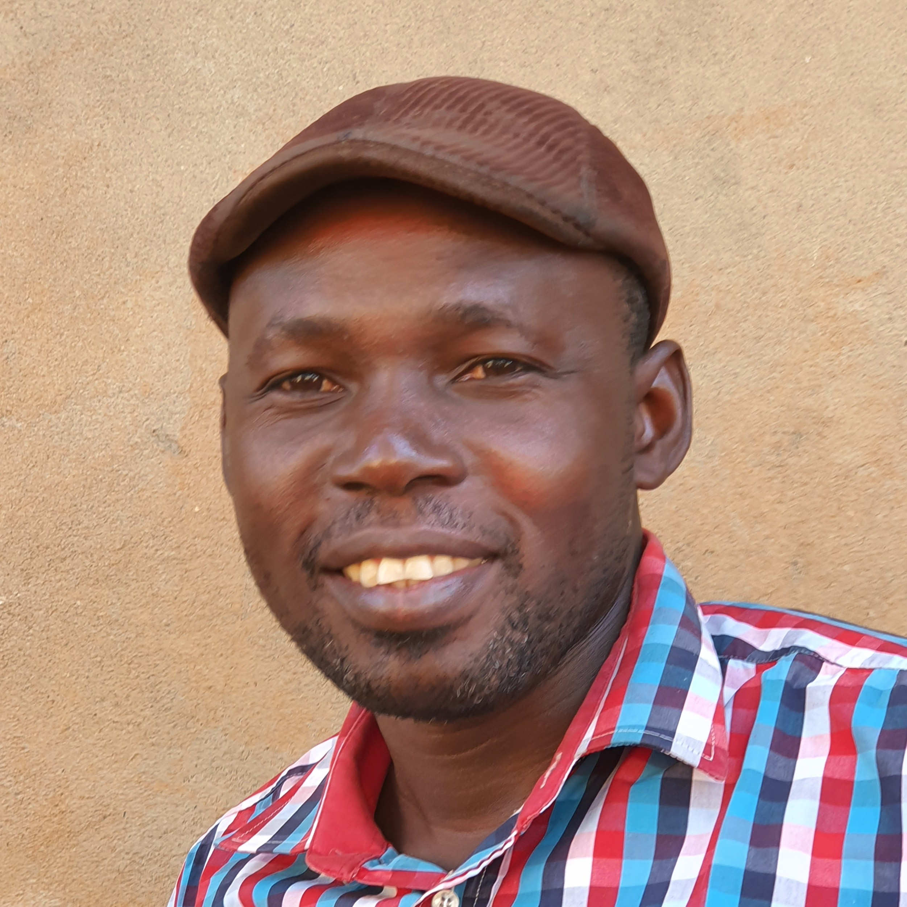

Az ötletgazda, Morris Andrea családjával 2009 és 2013 között Afrikában élt. Afrikai élményei közül a legmaradandóbb az az időszak volt, amikor a bamakói Sanfil nyomornegyed iskolájában tanított. Ezen a környéken nem volt állami iskola, így Andrea sok gyerekkel találkozott, akik szüleik szegénysége miatt nem jutottak el iskolába. 2012-ben fogant meg benne a bamakói gyermektámogatási program gondolata, amely azóta már több, mint 100 gyereket juttatott alapszíntű oktatáshoz a világ olyan részein, ahol nincs ingyenes iskola.

Hogy kerültünk Zambiába? Surányi Anna vagyok, alapvetően francia- és társadalomismeret-tanár, de régi álmom volt eljutni Afrikába. Először Tanzániában voltam 2017-ben önkénteskedni, 2019 nyarán pedig egy UNESCO világörökség program keretében önkénteskedtem egy hónapig Zambiában. Maga a projekt nem úgy alakult, ahogy szerettük volna, de a program helyi koordinátorával, Auxiria Mwanzával együtt töltött sok idő alatt megtudtam, hogy Auxiria nemcsak világörökség projekteket szervez, hanem a családjának van egy iskolája is Kafuéban. Amikor ezt megtudtam, rögtön kíváncsi lettem, és – hála a félresikerült eredeti projektnek – volt időnk elmenni megnézni az iskolát. Az Auxiriával folytatott beszélgetések során az is kiderült, hogy nem minden gyerek családja engedheti meg magának, hogy kifizesse a tandíjat (ami a többi magániskolához képest nem magas egyébként), és így jött az ötlet, hogy mi lenne, ha itt is kialakítanánk egy gyerektámogatási programot.

Morris Jenni vagyok, 19 éves és a Cambridge-i egyetem elsőéves földrajz hallgatója vagyok. Gyerekkoromban volt szerencsém három afrikai országban, köztük Maliban élni, ahol nagyszerű élményeket szereztem, és megtapasztaltam, hogy én is tudok és szeretek segíteni. Jelenleg az Alapítvány honlapjával foglalkozom, de gyakran fellépek az Alapítvány egyik előadójaként is.

Bouréma Dolo vagyok, egy dogon Bamakóból. Egy kis faluban születtem, messze a várostól, a dogon fennsíkon. Az általános iskola után a gimnáziumot és az egyetemet Bamakóban végeztem. Abban, hogy tanulhattam nagy segítségemre volt egy francia házaspár, akik turistaként jártak a Dogonföldön, és ahogy nálunk szokás gyerekként érdeklődve követtem őket a falunkban. Ők nem csak segítettek a tanulmányaimban, de szinte fogadott fiúk lettem. Diplomámat Földrajz és Fejlődés Szakon szereztem a bamakói egyetemen. Hiszem, hogy változást csak oktatással lehet elérni. Ezért érzem fontosnak, hogy ebben az alapítvnyban részt vegyek.

Szilvási-Baïlo Barbara vagyok, a Közel Afrikához Alapítvány egyik önkéntese. Az Alapítvánnyal egy évvel ezelőtt találkoztam az Afrika napon, ahol rögtön felkeltette az érdeklődésem, hogy Malival is foglalkoznak. Az Apukám is Maliból származik, így egyértelmű volt a kötődés. Építészként dolgozom, a francia nyelvismeretemnek köszönhetően pedig örülök, hogy segíthetek a gyerekek adminisztrációjában és részese lehetek ennek a szuper csapatnak. Remélem, hogy minél több gyerek taníttatását tudjuk segíteni és hogy minél több embernek megmutathatjuk Afrika csodás világát! Köszönjük, hogy velünk vagytok!

Pásti Fanni vagyok, 2020-ban érettségiztem a Közgazdasági Politechnikum Alternatív Gimnáziumban. Iskolánkban sok lehetőség volt az önkénteskedésre, különbözô kultúrák megismerésére. Kiskorom óta sokat utazgatok, és nagyon szeretek különböző kultúrákat/vallásokat/embereket megismerni. Afrika mindig is nagyon elvarázsolt. Pár éve elkezdtem többet olvasni, filmet nézni Afrika országairól, történelméről. Az AIESEC nyári tábora miatt lehetőségem volt találkozni emberekkel a világ sok pontjáról, új barátokat szerezni és mélyebbre megismerkedni az afrikai kultúrákkal, országokkal is. Tavaly októberben pedig részese lehettem az Afrika napnak, ahol még több tudást sajátíthattam el. Mindig is szerettem volna segíteni, támogatni, de nem tudtam, milyen úton induljak el. Végül három hónapja csatlakoztam a Közel Afrikához Alapítvány önkéntes csapatához. Nagyon izgatott és elhivatott vagyok!

Németh Aliz vagyok, jelenleg gyártástervezőként tevékenykedem. Afrika iránti érdeklődésem már gyerekkorom óta részét képezi az életemnek. Sorsfordító volt két éve történő kiutazásom turistaként Kenyába illetve Tanzániaba, mellyel egy régi álmom vált valóra. Óriási hatással volt rám és akkor megfogalmazódott bennem, hogy vissza kell térnem és elkezdtem kutatni a lehetőségeket, illetve azt az utat, amely vissza tudna kötni ehhez a varázslatos helyhez. Nagy örömömre idén rátaláltam a Közel Afrikához Alapítványra, általa megtaláltam azt a köteléket, amely leginkább hozzám közel áll, hiszen adni jó dolog, és ha ezzel másokat boldoggá tehetek, az még nagyobb örömet okoz. Egy tandíjra rászoruló kislány támogatásával, az Alapítvány hírlevelének a szerkesztésével, illetve webfejlesztéssel tudok jelenleg hozzájárulni az önkéntes tevékenységhez. Magánemberként szeretem a kihívásokat, az utazást és azt, ha kiszakíthatom magam a saját komfortzónámból. Hobbi szinten festeni is szoktam, két éve Zürichben volt egy önálló kiállításom. Kenyai utazásom óta Afrika témában festek, és ezen képeim kiállításának megvalósítása is a terveim közt szerepel. Későbbiekben nagyon szeretnék az önkéntes csapat részese maradni, valamint kiutazni, ahol személyesen részt vehetnék különféle segítő programokban, missziókban és természetesen találkozni szeretnék az általam támogatott kislánnyal és családjával.

Nyíri Lívia vagyok, 19 éves, és Közgazdasági Politechnikumban végeztem 2020-ban. Imádom az angol és a francia nyelvet, de utálom az igazságtalanságot, és az Afrikában való önkénteskedés pedig a bakancslistámon szerepel 17 éves korom óta. Ennek a háromnak az ötvözete miatt nagy örömmel csatlakoztam az alapítványhoz. Nagyon nem tetszik az, hogy valakinek a jövőjét meghatározza az, hogy hova születik. Igazságtalannak tartom, hogy nem Mindenki részesülhet oktatásban, csupán anyagiak miatt. DE! Ez az alapítvány megoldást talált erre a problémára, s hála a támogatóknak, sok gyerkőc részesülhet oktatásban. Nagyon-nagyon izgatott vagyok, hiszen eddig csak Magyarországon önkénteskedtem, itt az ideje, hogy kicsit szélesebb spektrumban lássam a világot, tenni mindig van mit, akárhol jár az ember, s ez az, ami a leginkább éltet engem.
Az alapítvány mára egy csapat fiatal és középkorú önkéntessel bővült, akik szeretnének hatékonyan segíteni a rászorultakon.
 Támogass egy gyereket!Segíts egy Bamakói gyereknek iskolába járni
Támogass egy gyereket!Segíts egy Bamakói gyereknek iskolába járni Építs iskolát!Segíts egy Bamakói iskola felépítésében
Építs iskolát!Segíts egy Bamakói iskola felépítésében Kézmosás kampányOktatás a higiéniáról gyerekeknek
Kézmosás kampányOktatás a higiéniáról gyerekeknek Utat a labdának!Építsünk sportpályát és emeljük ki az iskolát a mocsárból!
Utat a labdának!Építsünk sportpályát és emeljük ki az iskolát a mocsárból! ÖsztöndíjSegítsünk, hogy otthon boldogulhasson!
ÖsztöndíjSegítsünk, hogy otthon boldogulhasson! Tervezett programjainkAmin most dolgozunk
Tervezett programjainkAmin most dolgozunk